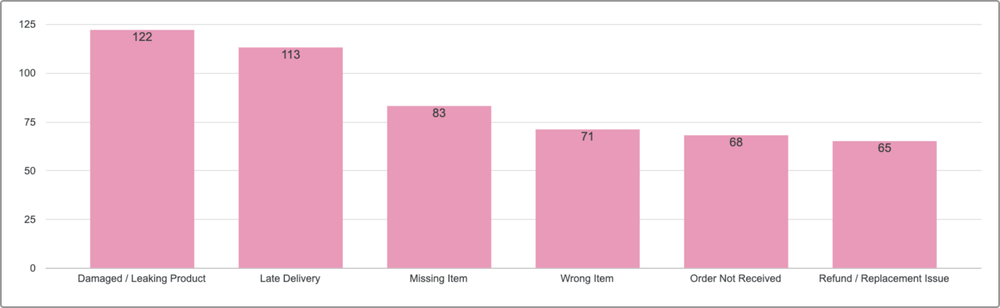
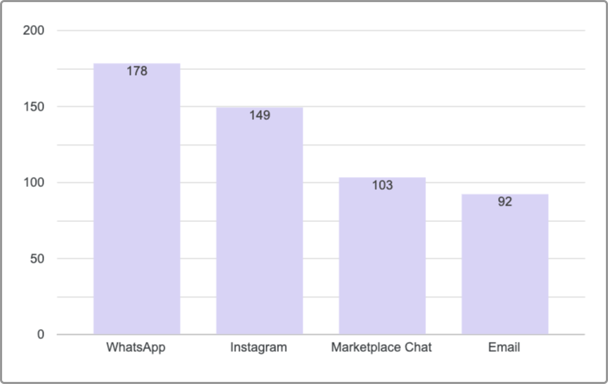

About Me
Where customer experience meets data and communication.
I started in customer-facing roles, but over the years I became just as interested in what happens behind the conversations — the patterns in complaints, the numbers behind service performance, and the decisions teams make from customer feedback.
Today, I work across customer experience, reporting, and communication, turning messy information into reports, dashboards, and insights that teams can actually use.
Customer Experience · Reporting · Dashboarding · Jakarta, Indonesia
At a Glance
What I Do
Making sense of customer feedback and service metrics.
I work with customer feedback, complaint trends, service metrics, and operational reports on a regular basis. A lot of the job is figuring out what keeps happening, what changed, and where the biggest friction is.
That usually means building dashboards, preparing monthly reports, monitoring SLA and CSAT, and turning scattered operational data into something more useful for decision-making.
I also work closely with Operations, Quality, Brand, and other teams, so the reporting does not stop at "what happened" — it needs to help answer what should be looked at next.
- Customer experience reporting
- Complaint & feedback analysis
- KPI, SLA & CSAT monitoring
- Google Sheets reporting
- Looker Studio dashboards
- SOP & process documentation
Communication Background
My background in English Literature and professional writing.
My degree is in English Literature, and before moving deeper into Customer Experience, I also took on paid freelance work in proofreading, document editing, and translation.
That background shaped how I work with information today. I pay attention not only to what the data says, but also to how clearly it is structured, written, and presented for the people who need to use it.
Across the freelance records I still have, those language-related projects generated more than IDR 8 million in documented earnings.
Based on available payout records from paid proofreading, editing, and translation work.
What I Can Help You With
Six ways I can support your customer experience work.
Google Sheets Reporting
Clean, organize, structure, and analyze customer or operational data so it is easier to use and understand.
Looker Studio Dashboards
Build clear, practical dashboards for customer experience, complaint trends, service performance, and operational reporting.
Customer Feedback Analysis
Identify recurring patterns, themes, customer pain points, and opportunities for improvement.
KPI, SLA & Performance Reporting
Track key metrics and turn performance data into reports that are easier for teams and stakeholders to act on.
Complaint & Root Cause Analysis
Go beyond counting complaints by identifying what is driving recurring issues and where teams should focus next.
Process & SOP Documentation
Turn workflows and operational knowledge into clear, practical documentation that supports consistency and easier execution.
Portfolio Highlights
Selected work.
Customer Experience Dashboard & Order Issue Analysis
Built from 500+ synthetic customer support records to explore ticket trends, response and resolution time, CSAT, SLA performance, severity, channels, and recurring order issues. This project demonstrates how I structure raw customer support data in Google Sheets and turn it into an interactive Looker Studio dashboard designed for clearer CX monitoring and reporting.


This is a fictional portfolio project built with synthetic customer support data for demonstration purposes. No confidential company or customer data is shown.
How I Work
I usually start by looking for patterns — what keeps coming up, what changed, and where the biggest friction is.
From there, I organize the data, check the context behind the numbers, and turn the findings into something useful for the people who need to act on it.
Sometimes that means a dashboard. Sometimes it is a monthly report, a complaint analysis, or a recommendation for the next step.
Find the pattern
Look at recurring issues, changes, and signals that need attention.
Add context
Connect the numbers with customer feedback and operational reality.
Make it usable
Turn the findings into a dashboard, report, or recommendation teams can actually use.
Tools
Contact
If the data is there but the direction isn't, I can help make sense of it.
Available for remote freelance projects and short-term collaborations.
Customer Experience · Reporting · Dashboarding · Customer Insights · Process Documentation